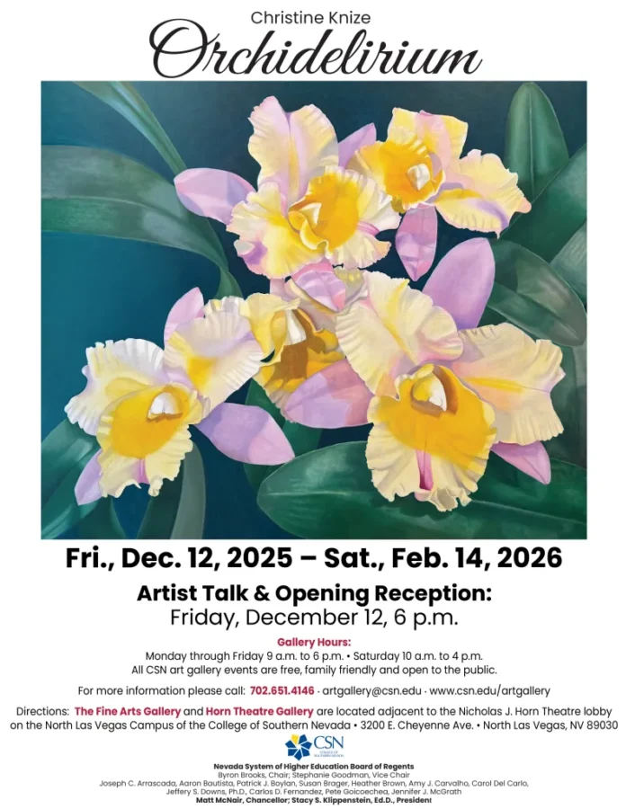

Christine Knize: Orchidelirium
Christine Knize, alumna of Tyler School of Art, BFA and Rhode Island School of Design, MFA, born in NYC, inherited her artistic talent from two generations of women artists. Her academic journey led her to spend three years in Italy and France, specializing in the Renaissance. Throughout her career, Christine maintained a dual focus on painting and photography. In 1986, Christine moved to Miami, where she established a paint decoration company which drew the attention of numerous celebrities. Notably, Christine dedicated years to the restoration of the Biltmore Hotel, where she meticulously revived the hand-painted finishes adorning the lobby and ballrooms. She also played a role in the initial renovations of Miami Beach Art Deco hotels, contributing to the preservation of historical landmarks. After three decades in Miami; Christine embraced a new chapter in Jacksonville, Florida, where she channels her artistic energy into creating large-scale canvases of orchids.